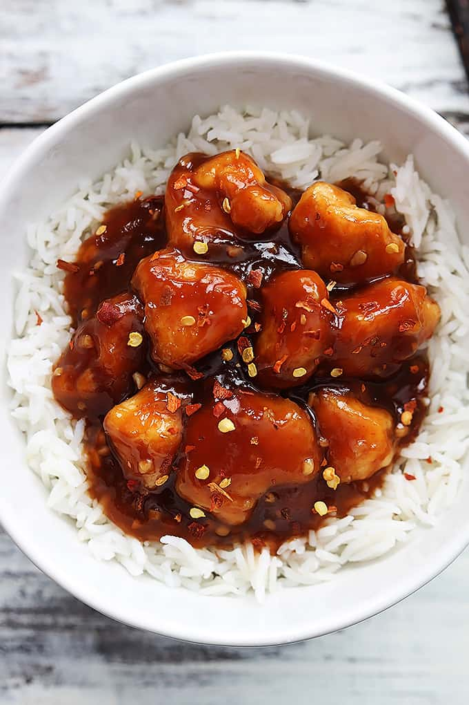

Honey Sriracha Chicken

Description
This is a great recipe for people that enjoy the
taste of sriracha as well as american chinese food such
as General Tso's Chicken.
Ingredients
- Chicken
- Sriracha
- Honey
- Rice
Steps
- Cook your chicken.
- Prepare your sauce by mixing honey and sriracha.
- Cook your rice.
- Combine all parts and enjoy!